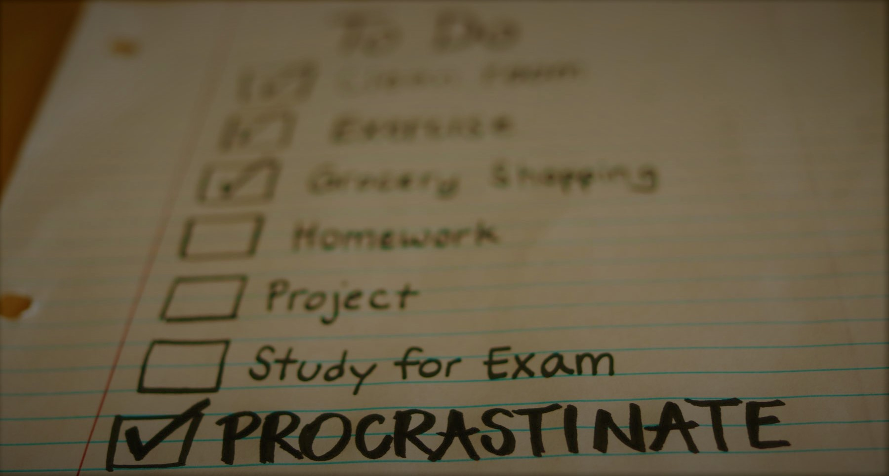

Well! I am not an advisor or expert to give someone advice but after reading this blog I hope you will less procrastinating person. These are the points that I followed to remove procrastination or can say I don't believe in the procrastinating/procrastination word.
Because we/you don't have our/your dreams to follow. Goals to achieve. You don't want to do anything in life just staying in one place and live life there. (This not works bruh, life is not like this). Not having goals, dreams are the main reason and you always search around in the environment asking people, searching on the internet how not to be procrastinated. And day by day time has passed and you have not found anything.
My advice is to found your dreams, goals, or if you don't have just make it and work on that. There will
be some things like you have to patient and be consistent(Keypoint).
There may be many types of procrastination but on this blog, I write about procrastination in
studying. You want to study but you are not found any motivation to study. Am I Right?
I am sure you will never found motivation for doing any work because the motivation you are finding in
the environment is inside you.
"We Inspire from others and we make us motivate."
All of the above these type of question has only one solution and i.e, "Our Mind"."Mind is the most powerful tool/thing that has physical existence and has the power to change the world. Before changing the world change ourselves. And you will change your life."
We know but we never applied and I think most of the people don't know how to cooperate/play with the
wandering mind. Some points which will help you to less procrastinated.
~Found your goals, dreams.
~Wake up early, do meditate 15 minutes 2 times a day. (This will make you focus, and consistent
on your work.)
Our minds don't know what is right or what is wrong.
~Remembering your mind again and again that you have to study(or work), you have to study but saying
within you.
This will improve you a little but you will be better than before in a couple of weeks.🙏